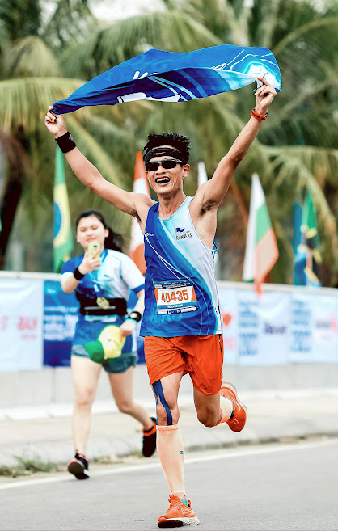

Kiểm tra chỉ số cơ thể
Hôm nay, Lãng tôi, mạn phép góp chút gọi là: chém gió về thứ cũng rất được các runners quan tâm nhất là các runners nằm trong nhóm “đị chúa” 😃 . Đó là Trang phục và Giày/Dép trong chạy bộ
Quan trọng?
Ngoài các vấn đề trong chạy bộ mà được các runners nhắc đến nhiều nhất như là Long Run, Tempo, dinh dưỡng, race….thì Trang phục và Giày/Dép trong chạy bộ không kém phần quan trọng
Vì sao quan trọng?
- Trang phục và Giày/Dép trong chạy bộ có thể giúp cho runners dễ dàng hơn khi chinh phục các target của bản thân
- Có nhiều ảnh đẹp hơn để …sống ảo
- Giúp các runners thấy yêu chạy bộ hơn, yêu đời hơn, trẻ trung hơn
- Lên level của độ “ĐỊ”
Lựa chọn Trang phục và Giày/Dép trong chạy bộ dẫn tới điều gì?
Trang phục –phụ kiện:
- Gây ngứa ngáy, kích ứng da.
- Tổn thương da ở các vị trí da nhạy cảm như bẹn, núm vú, nách, thắt lưng……
- Làm nặng thêm khi bị ướt nước trong race
- Tâm lý không thoải mái khi chọn 1 bộ đồ chạy bộ không ưng ý
- Lên ảnh không đẹp 😃
Giày/Dép: (Chạy bộ có thể dùng giày hoặc dép chạy)
- Kích chân gây đau nhói ở các ngón chân là hay gặp do giầy chật
- Dập và hư các móng chân
- Căng cân cơ gan bàn chân quá mức
- Tổn thương da vùng gót chân, mu bàn chân do giày quá chật
- Lật sơ mi ở cổ chân
- Tổn thương gân gót chân
- Căng cơ bắp chân
- Giày ướt sũng khi race
- Tâm lý không thoải mái
- Ảnh hưởng kết quả thi đấu
- Lên ảnh không đẹp 😃
Lựa chọn Trang phục và Giày/Dép trong chạy bộ như thế nào?
Tiêu chí đầu tiên và là quan trọng nhất đó là bản thân runner CẢM THẤY THOÁI MÁI và TỰ TIN NHẤT.
Trang phục –Giày/dép là những loại được thiết kế riêng cho chạy bộ
Đối với Trang phục-phụ kiện (Băng đô, tất ống tay, chân, kính…..):
Không nhất nhiết là phải những món quá đắt tiền, miễn sao đáp ứng được các tiêu chí sau:
- Chọn thiết kế, màu sắc, họa tiết theo gu thời trang bản thân.
- Càng nhẹ càng tốt
- Không quá chật, không quá rộng
- Thoáng khí
- Thoát nước tốt
- Hỗ trợ đàn hồi tốt cho cơ đối với bó calf
- Chặn mồ hôi tốt đối với Băng đô đeo trán
- Đối với quần thì có vài túi nhỏ đủ để đựng gel, muối và có thể đựng điện thoại và tiền lẻ, à quên….còn thêm ít….giấy vệ sinh(hế hế)
- Giữ nhiệt tốt vào mùa lạnh với áo giữ nhiệt, nhưng phải càng nhẹ, càng thoải mái càng tốt
- Nên sử dụng trang phục thi đấu phù hợp với mục tiêu và đã sử dụng quen trong tập luyện trước đ ó. Không nên sử dụng trang phục quá mới để đi race
Đối với Giày/Dép chạy bộ:
- Thường thì runners chọn giày để đi race. Tuy nhiên, việc sử dụng cả giày và dép khi tập luyện cũng rất tốt.
- Dép sử dụng vào các bài tập vào lúc trời mưa, ướt hoặc sử dụng vào các bài chạy easy/recovery để bàn chân được thông thoáng và dễ chịu
Tiêu chí đầu tiên chọn Giày/Dép là PHÙ HỢP VỚI CẤU TẠO BÀN CHÂN và THÓI QUEN - KHẢ NĂNG TẬP LUYỆN/THI ĐẤU
Phù hợp với cấu tạo bàn chân: Cấu tạo bàn chân mỗi người chia thành 2 nhóm là chân bè và chân thon. Nhất là chân bè thì phải chọn những loại giày bản wide. Chân bè mà sử dụng các phiên bản giày thường rất dễ bị kích ngón chân, đau tức bàn chân khi chạy do thường bị chật
Thói quen - khả năng tập luyện/thi đấu:
- 1 số runners chọn tập luyện theo MAF (Chạy theo nhịp tim) nên không yêu cầu các loại giày có hỗ trợ tốc độ mà tập trung vào các loại giày phù hợp các bài chạy tăng sức bền, độ lệch đế gót giày và mũi giày không nhiều.
- Các runners tập nhiều vào tốc độ thì sử dụng các loại giày sử dụng trong biến tốc, có hoàn trả năng lượng tốt (độ nảy)
- Thói quen đáp gót/cả bàn chân: Không nên sử dụng giày có độ lệch giữa gót giày và mũi giày cao. Vì nếu loại giày này sẽ khiến runners dễ bị tổn thương cân gan bàn chân do căng quá mức khi chạy.
- Thói quen đáp nửa bàn chân trước hoặc mũi bàn chân: Sử dụng các loại giày độ lệch đế gót giày và mũi giày cao sẽ tăng tính hiệu quả trong tập luyện và thi đấu
Các tiêu chí khác:
- Sử dụng giày sao cho cảm thấy thoải mái và tự tin nhất khi tập luyện/thi đấu
- Chọn giày theo gu thời trang (màu sắc, họa tiết, thiết kế)
- Giày không quá chật, không quá rộng
- Lựa chọn giày theo mục tiêu tập luyện/thi đấu
- Nên có 1 đôi giày chạy biến tốc, 1 đôi giày chạy tích lũy và 1 đôi dép. Đối với đi trail thì có giày trail riêng
- Nên sử dụng giày thi đấu phù hợp với mục tiêu và đã sử dụng quen trong tập luyện trước đó. Không nên sử dụng giày quá mới để đi race
=> Tổng hợp kiến thức về chạy bộ (Update liên tục)
Pê ếch: Lấy cái ảnh ni hồi chạy quả FM đầu đời 3h43 tại Hạ Long: Khoác trên người bộ cánh chộ tự tin hẳn vì “Độ đị” trong race thì nỏ cần bàn 😃.

#HTMT
#HaTinhMarathonTeam
#HTR
#TrangPhucTrongChayBo
#KienThucChayBo